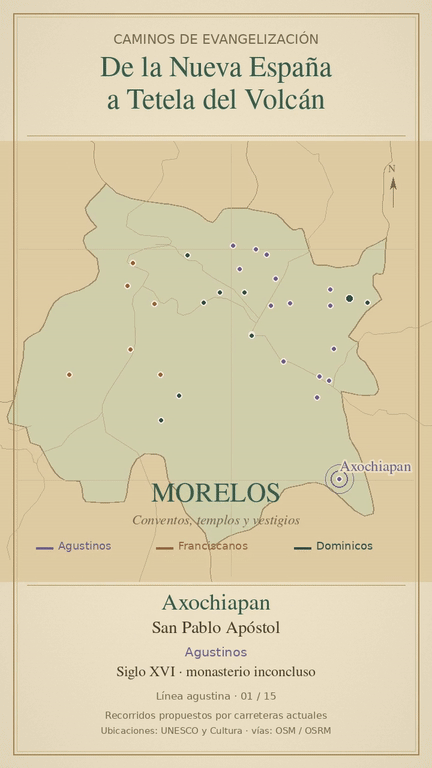

Rutas de evangelización de Morelos
Descubre los caminos que recorrieron los franciscanos, agustinos y dominicos durante la evangelización de Morelos en el siglo XVI.

REGRESAR AL INICIODescubre los caminos que recorrieron los franciscanos, agustinos y dominicos durante la evangelización de Morelos en el siglo XVI.

REGRESAR AL INICIO